Brought to you by
City Lights Recording Studio
1299 Highway 33 West, Farmingdale, New Jersey. Built as a studio from the ground up, recording since 1989, on this corner since 1990.
The room
Three and a half years with the planning board before a wall went up.
City Lights was not converted from something else. It was designed as a recording studio and built as one — which is why the control room made the cover of Mix Magazine in August 1990, in a design special called “The Class of 1990: A Look at Sixteen New Rooms.”
Five separate work spaces. A thirty-year in-house sound library and a pre-production suite. An hour from Manhattan, an hour from Philadelphia, an hour from Atlantic City, and minutes from the Jersey Shore.
The newest room, Lounge City Studio, is an all-digital signal path, marketed by the studio as the first of its kind in New Jersey.
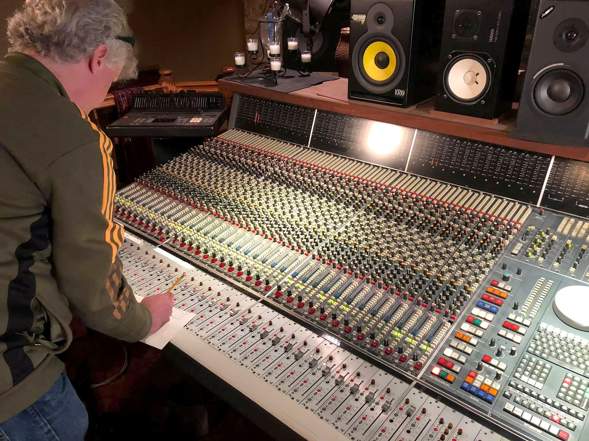
Gear
What is actually in the building
Model numbers, because engineers search by model number.
- Console
- Neve VR6060 channel, fully automated — Studio A
- Tape
- Studer A82724-track 2-inch analog, running Ampex 456
- Digital console
- Behringer WING
- Outboard
- Yamaha · Lexicon · AMS · Eventide · Summit Audio · Drawmer · Orban · Digidesign · Roland · Tascam · TC Electronics · Sony
- Keys
- Fender Rhodes Mark I · Yamaha DX7 · Roland D-50
- Drums
- Mapex acoustic kit · Roland V-Drums · Boss Dr. Rhythm DR-770
- Amps
- Fender Bandmaster Reverb-Amp TFL5005DFender silverface combo · Marshall MG100HDFX · Marshall head on a custom three-driver cabinet · Peavey cabinets · Vox Valvetronix

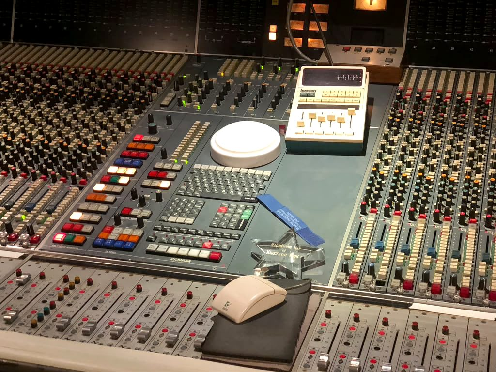
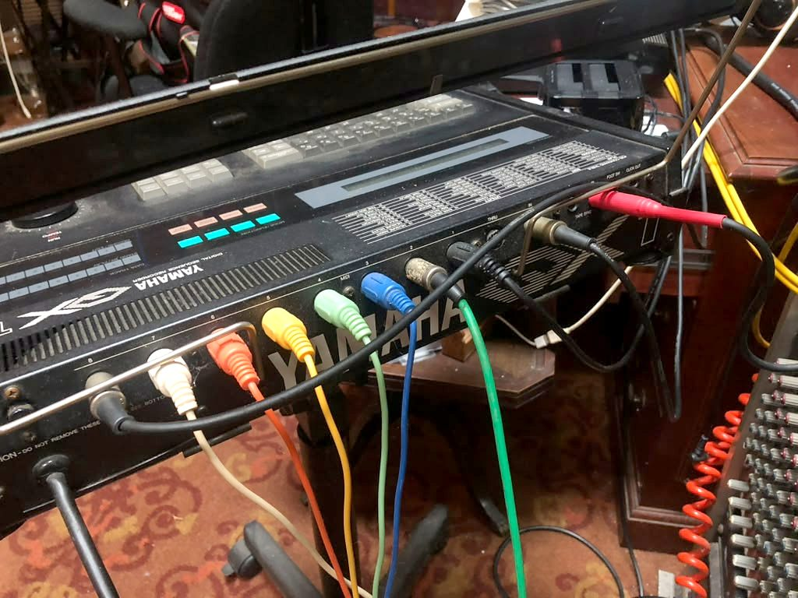
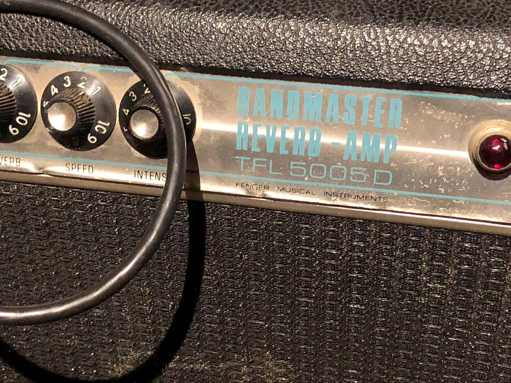
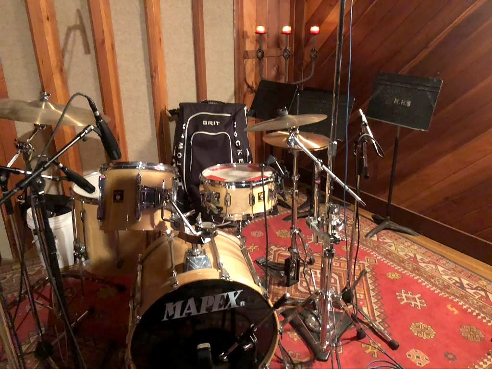
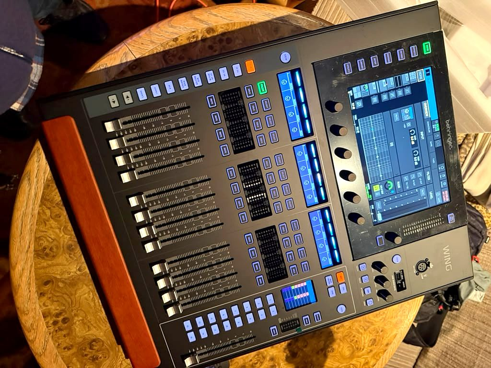
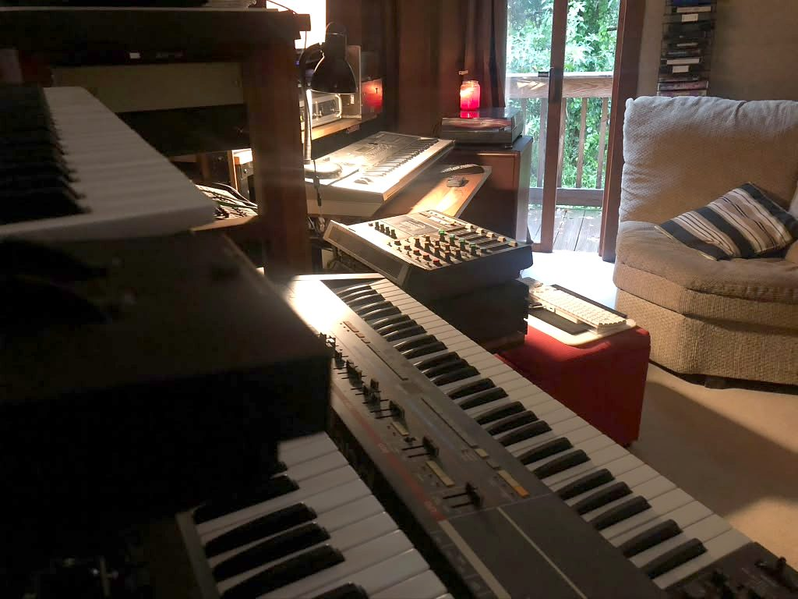
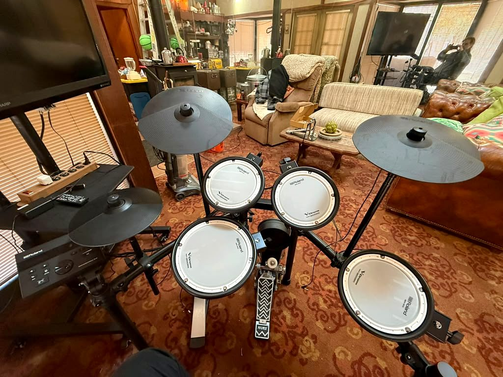
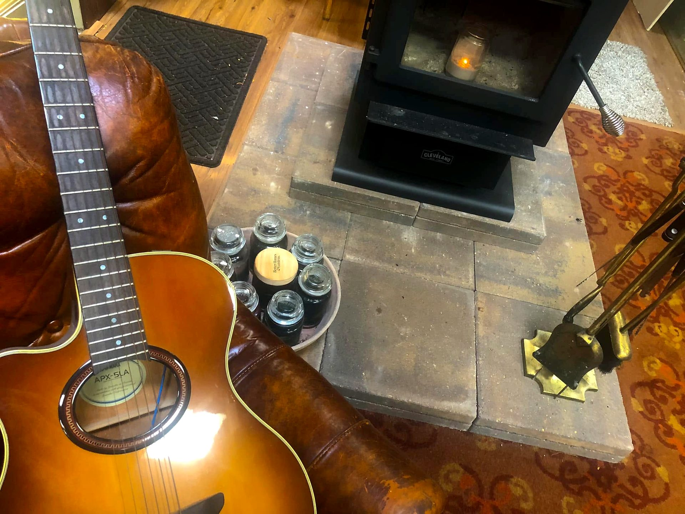
The lounge
There is a wood stove, and it is usually lit.
Cathedral ceiling, cedar walls, leather couches and a kettle on the stove. Sessions here run to eleven at night, six days a week, and the room is built for the hours between takes.
It is also where the listening nights and release parties in the membership tiers would happen.
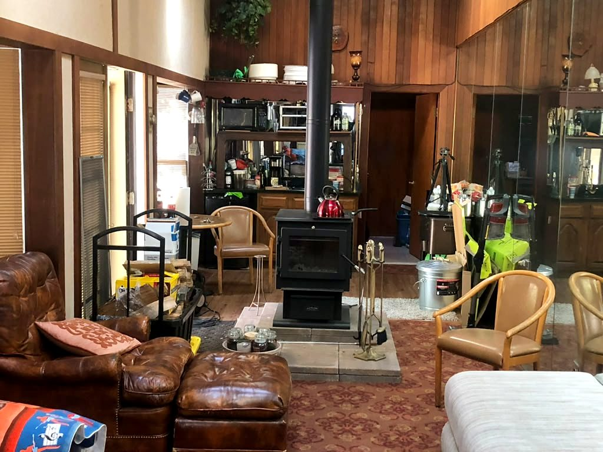
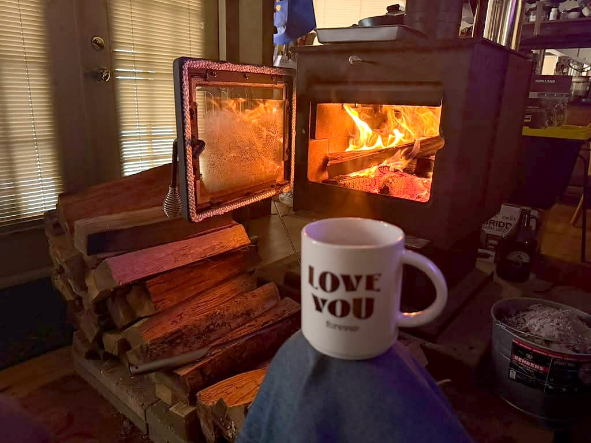
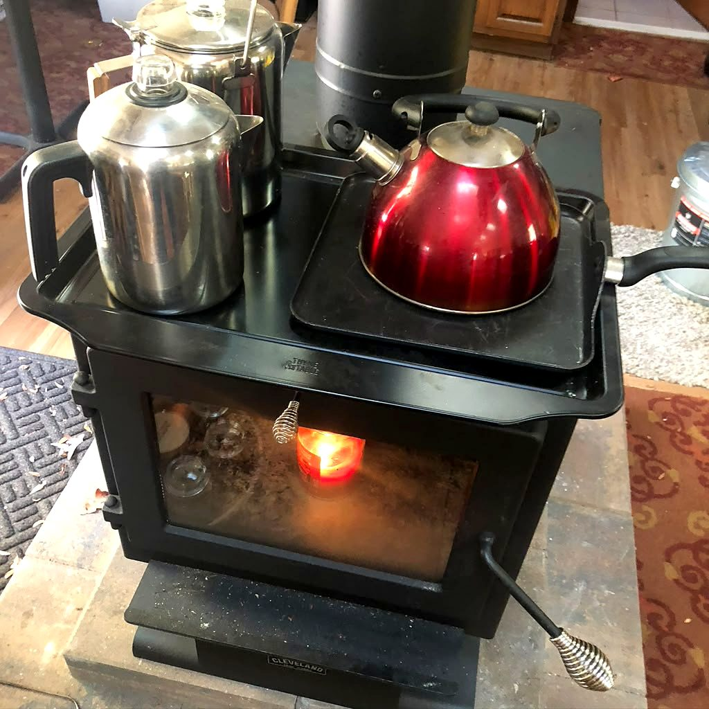
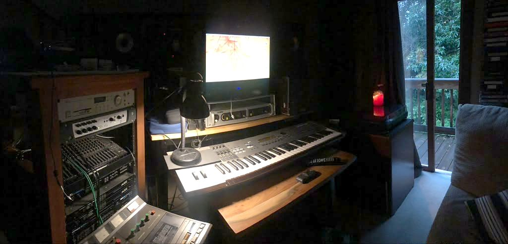
Studio credits
Who has recorded here
These are City Lights’ own published claims about its client history over thirty-five years. They are not Tune2This artists, they are not endorsements, and none of them is signed to the label.
- Dee Dee Sharp
- Danny Aiello
- Richie Sambora
- The Chi-Lites
- Cher
- Lloyd Price
- Dan McKeown
- Bonnie Pointer
- Bunny Sigler
- Nicky Hopkins
- Dionne Warwick
- Instant Funk
- Emmanuel Raheem (GQ)
- Chuck Rainey
- Denroy Morgan
- Hit The Ground Runnin
- Paul Piccari
- Shannon MacDonald
- Bad Company
- Bruce Springsteen
- The Rolling Stones
- Skid Row
- Parliament / Funkadelic
- Kool & The Gang
- Das EFX
- The Fat Boys
- Members of Bon Jovi
Book
Get a quote for the room.
Rates are quoted per project. Tell us what you are cutting and how long you think it will take. Tune2This members get a standing discount.
- Address
- 1299 Highway 33 WestFarmingdale, NJ 07727
- Phone
- (732) 938-4565
- Hours
- Mon–Fri 8am–11pmSat 10am–11pm · Sun 12pm–11pm